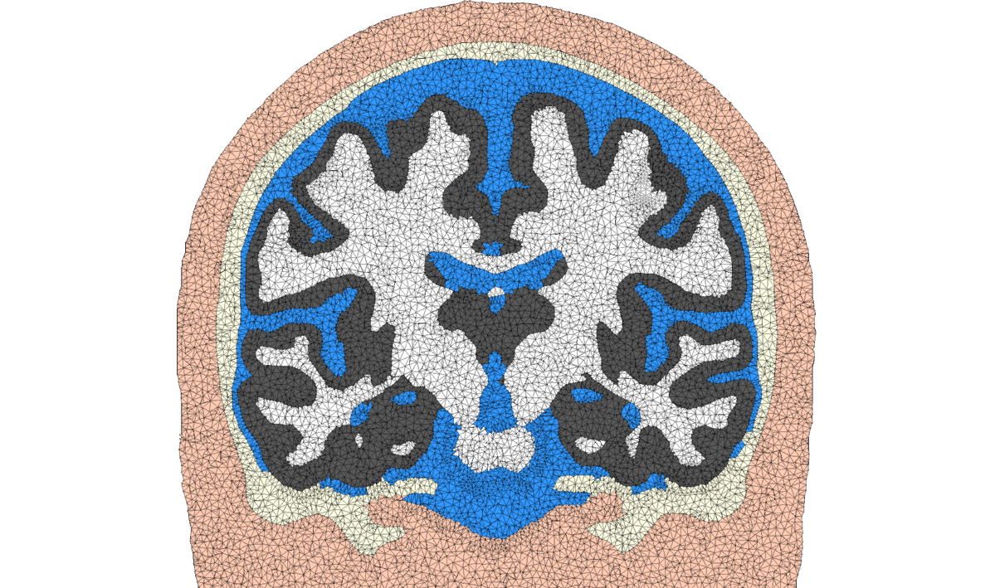
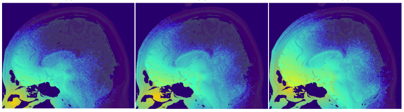
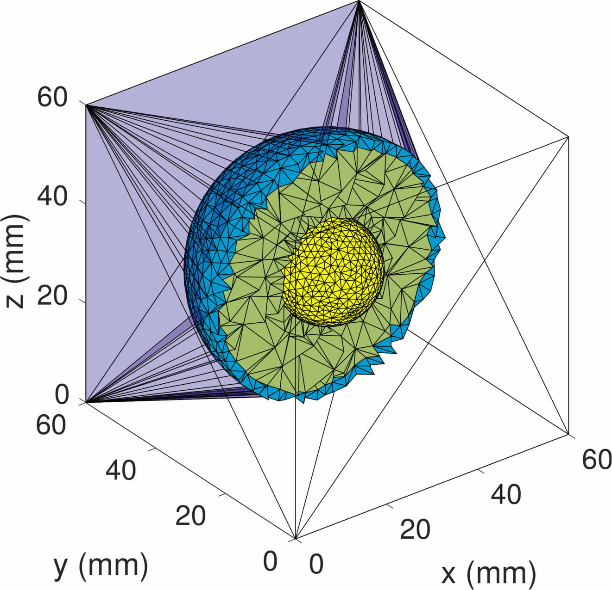
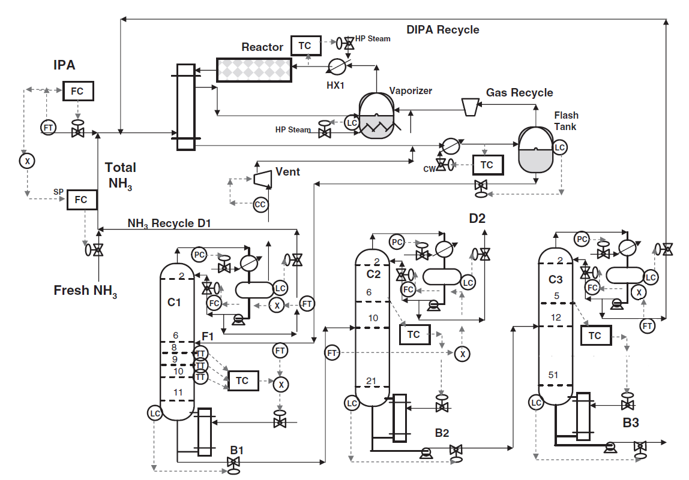

About me
I joined Memorial Sloan Kettering Cancer Center this January in the capacity of Postdoctoral Research Fellow in the department of Medical Physics with a focus on predictive informatics.
I completed my Ph.D. in Chemical Engineering under the supervision of Professor Eduardo Sontag and a M.S. in Electrical and Computer Engineering at Northeastern University. Previously, I received a B.S. in Chemical and Biological Engineering from Tufts University.
My research focuses in the modeling and control of dynamical systems in systems biology and cancer therapy with interests that extend to the areas of light optics, applied mathematics, high-performance computing, chemical engineering, and machine learning.
I can be reached at anhphong.t [at] gmail [dot] com. I am always happy to discuss collaborations.
Publications
Transient Diffusion in Bi-layer Composites with Mass Transfer Resistance: Exact Solution and Time Lag Analysis
Tran, A.P., Meldon, J.H., and Sontag E.D., 2020. Frontiers in Chemical Engineering.
Exact analytical and closed-form solutions to the transient diffusion in bi-layer composites with external mass transfer resistance are reported. Expressions for the concentrations and the mass permeated are derived in both the Laplace and time domains through the use of the Laplace transform Inversion Theorem. The lead and lag times, which are often of importance in the characterization of membranes and arise from the analysis of the asymptotic behavior of the mass permeated through the bi-layer composite, were also derived. The presented solutions are also compared to previously derived limiting cases of the diffusion in a bi-layer with an impermeable wall and constant concentrations at the upstream and downstreamboundaries. Analysis of the time lag shows that this membrane property is independent of the direction of flow. Finally, an outline is provided of how these transient solutions in response to a step function increase in concentration can be used to derive more complex input conditions. The importance of adequately handling boundary layer effects has a wide array of applications such as the study of bi-layers undergoing phenomena of heat convection, gas film resistance, and absorption/desorption.
Distributed implementation of Boolean functions by transcriptional synthetic circuits
Tran, A.P.*, Al-Radhawi, M.A.*, Ernst, E.A., Tianchi, C., Voigt, C.A., and Sontag E.D., 2020. ACS Synthetic Biology. [PDF][Software]
Starting in the early 2000s, a sophisticated technology has been developed for the rational construction of synthetic genetic networks that implement specified logical functionalities. Despite impressive progress, however, the scaling necessary in order to achieve greater computational power has been hampered by many constraints, including repressor toxicity and the lack of large sets of mutually-orthogonal repressors. As a consequence, a typical circuit contains no more than roughly seven repressor-based gates per cell. A possible way around this scalability problem is to distribute the computation among multiple cell types, which communicate among themselves using di usible small molecules (DSMs) and each of which implements a small sub-circuit. Examples of DSMs are those employed by quorum sensing systems in bacteria. This paper focuses on systematic ways to implement this distributed approach, in the context of the evaluation of arbitrary Boolean functions.
The unique characteristics of genetic circuits and the properties of DSMs require the development of new Boolean synthesis methods, distinct from those classically used in electronic circuit design. In this work, we propose a fast algorithm to synthesize distributed realizations for any Boolean function, under constraints on the number of gates per cell and the number of orthogonal DSMs. The method is based on an exact synthesis algorithm to find the minimal circuit per cell, which in turn allows us to build an extensive database of Boolean functions up to a given number of inputs.
For concreteness, we will specifically focus on circuits of up to 4 inputs, which might represent, for example, two chemical inducers and two light inputs at different frequencies. Our method shows that, with a constraint of no more than seven gates per cell, the use of a single DSM increases the total number of realizable circuits by at least 7.58-fold compared to centralized computation. Moreover, when allowing two DSM's, one can realize 99.995% of all possible 4-input Boolean functions, still with at most 7 gates per cell. The methodology introduced here can be readily adapted to complement recent genetic circuit design automation software.
Delicate balances in cancer chemotherapy: modeling immune recruitment and emergence of systemic drug resistance
Tran, A.P., Al-Radhawi, M.A., Kareva, I, Junjie, W, Waxman, D.J., and Sontag E.D., 2020. Frontiers in Immunology. [PDF]
Metronomic chemotherapy can drastically enhance immunogenic tumor cell death. However, the responsible mechanisms are still incompletely understood. Here, we develop a mathematical model to elucidate the underlying complex interactions between tumor growth, immune system activation, and therapy-mediated immunogenic cell death. Our model is conceptually simple, yet it provides a surprisingly excellent fit to empirical data obtained from a GL261 mouse glioma model treated with cyclophosphamide on a metronomic schedule. The model includes terms representing immune recruitment as well as the emergence of drug resistance during prolonged metronomic treatments. Strikingly, a fixed set of parameters, not adjusted for individuals nor for drug schedule, excellently recapitulates experimental data across various drug regimens, including treatments administered at intervals ranging from 6 to 12 days. Additionally, the model predicts peak immune activation times, rediscovering experimental data that had not been used in parameter fitting or in model construction. The validated model was then used to make predictions about expected tumor-immune dynamics for novel drug administration schedules. Notably, the validated model suggests that immunostimulatory and immunosuppressive intermediates are responsible for the observed phenomena of resistance and immune cell recruitment, and thus for variation of responses with respect to different schedules of drug administration.
Modeling voxel-based Monte Carlo light transport with curved and oblique boundary surfaces
Tran, A.P. and S.L. Jacques, 2020. Journal of Biomedical Optics.[PDF][Software]
Monte Carlo light transport simulations are most oftentimes performed in regularly spaced three-dimensional voxels, a type of data representation that naturally struggles to represent boundary surfaces with curvature and oblique angles. Not accounting properly for such boundaries with index of refractivity mismatches can lead to important inaccuracies, not only in the calculated angles of reflection and transmission, but also in the amount of light that transmits through or reflects from these mismatched boundary surfaces.

A new Monte Carlo light transport algorithm is introduced to deal with curvature and oblique angles of incidence when simulated photons encounter mismatched boundary surfaces.
Improving model-based fNIRS analysis using mesh-based anatomical and light transport models
Tran, A.P., Yan, S., and Fang, Q, 2020. Neurophotonics. [PDF][Software]
Over the past decade, functional near-infrared spectroscopy (fNIRS) has become an important research tool in studying human brain. Accurate quantification of brain activities via fNIRS relies upon solving computational models that simulate the transport of photons through complex anatomy. In this paper, we aim to highlight the importance of accurate anatomical modeling in the context of fNIRS, and propose a robust method for creating high-quality brain/full-head tetrahedral mesh models for neuroimaging analysis.

Selective photobiomodulation for emotion regulation: model-based dosimetry study.
Tran, A.P., Cassano, P., Katnani, H., Bleier, B.S., Hamblin, M.R., Yuan, Y., and Fang, Q., 2019. Neurophotonics. [PDF]
The transcranial photobiomodulation (t-PBM) technique is a promising approach for the treatment of a wide range of neuropsychiatric disorders, including disorders characterized by poor regulation of emotion such as major depressive disorder (MDD). In this study, we examined various approaches to deliver red and near-infrared light to the dorsolateral (dlPFC) and ventromedial prefrontal (vmPFC) cortex in the human brain, both of which have shown strong relevance to the treatment of MDD.

Dual-grid mesh-based Monte Carlo algorithm for efficient photon transport simulations in complex three-dimensional media
Yan, S., Tran, A.P., and Fang, Q., 2019. Journal of Biomedical Optics. [PDF] [Software]
The mesh-based Monte Carlo (MMC) method is an efficient algorithm to model light propagation inside tissues with complex boundaries, but choosing appropriate mesh density can be challenging. A fine mesh improves the spatial resolution of the output but requires more computation. In this paper, we propose an improved MMC dual-grid MMC or DMMC to accelerate photon simulations by using a coarsely tessellated tetrahedral mesh for ray-tracing computation and an independent voxelated grid for output data storage. The decoupling between the ray-tracing and data storage grids allows us to simultaneously achieve faster simulations and improved output spatial accuracy.

On the estimation of high-dimensional surrogate models of steady-state of plant-wide processes characteristics
Tran, A.P. and Georgakis, C., 2018. Computers & Chemical Engineering. [PDF]
Industrial chemical processes, especially in the presence of recycle loops, exhibit highly nonlinear behaviors that oftentimes do not have a closed-form expression. In this work, we show how high-dimensional steady-state surrogate models can be developed with high accuracy by combining the use of design of experiment techniques to alleviate computational costs and regularization techniques to avoid overfitting given the large number of terms involved. Through examples of three chemical process simulations (the Tennessee Eastman problem, an ethyl benzene, and a mono-isopropyl amine plant), we demonstrate the accuracy of the models and show applications of these surrogate models.
Thesis
Decision making by heterogeneous cell populations: immune-tumor interactions under metronomic chemotherapy and distributed computation in synthetic biology
Ph.D. Thesis in Chemical Engineering, Northeastern University, 2020. [PDF]
Advisor: Eduardo D. Sontag
The first part of this thesis focuses on the development of improved therapies in cancer through a better quantitative understanding of the biological mechanisms that enhance the anti-tumor immune response during metronomic chemotherapy. The developed model focuses on understanding the role of drug resistance, attempts to unravel the contributions of various immune components, and describes the complex interactions of the immune system with the tumor and the drug during a chemotherapy treatment. This quantitative approach is used to attempt to understand the underlying deficiencies of current treatments and to suggest new treatment regimens.
The second part focuses on the development of improved synthesis algorithms to implement greater logical complexity in engineered cells through the idea of distributed computing. The proposed algorithms deal with the development of efficient logical circuits under biological constraints with potential applications in the areas of immunotherapy and drug delivery.
© 2020 All rights reserved.